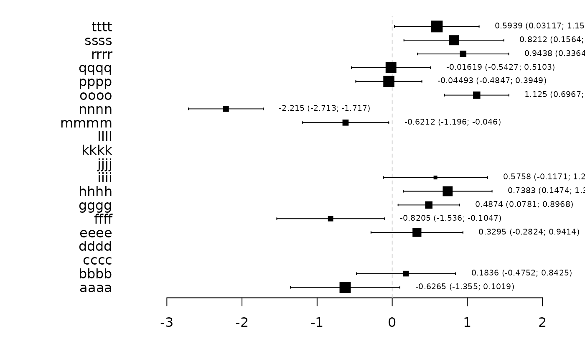
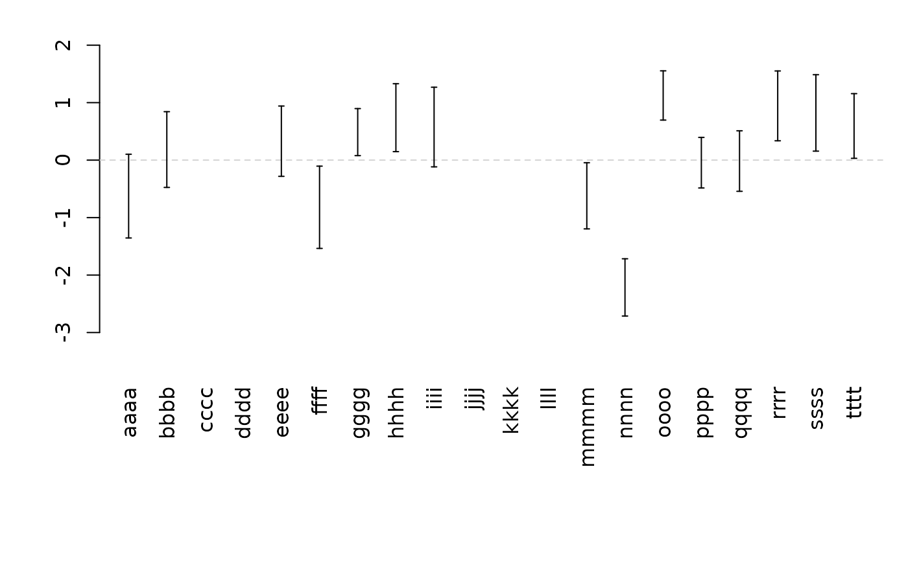

Add Confidence limits bar to plot
confband( x, lower, upper, center = NULL, line = TRUE, delta = 0.07, centermark = 0.03, pch, blank = TRUE, vert = TRUE, polygon = FALSE, step = FALSE, ... )
Arguments
| x | Position (x-coordinate if vert=TRUE, y-coordinate otherwise) |
|---|---|
| lower | Lower limit (if NULL no limits is added, and only the center is drawn (if not NULL)) |
| upper | Upper limit |
| center | Center point |
| line | If FALSE do not add line between upper and lower bound |
| delta | Length of limit bars |
| centermark | Length of center bar |
| pch | Center symbol (if missing a line is drawn) |
| blank | If TRUE a white ball is plotted before the center is added to the plot |
| vert | If TRUE a vertical bar is plotted. Otherwise a horizontal bar is used |
| polygon | If TRUE polygons are added between 'lower' and 'upper'. |
| step | Type of polygon (step-function or piecewise linear) |
| ... | Additional low level arguments (e.g. col, lwd, lty,...) |
See also
confband
Examples
confband(0.5,-0.5,0.5,0,col="darkblue")confband(0.8,-0.5,0.5,0,col="darkred",vert=FALSE,pch=1,cex=1.5)set.seed(1) K <- 20 est <- rnorm(K) se <- runif(K,0.2,0.4) x <- cbind(est,est-2*se,est+2*se,runif(K,0.5,2)) x[c(3:4,10:12),] <- NA rownames(x) <- unlist(lapply(letters[seq(K)],function(x) paste(rep(x,4),collapse=""))) rownames(x)[which(is.na(est))] <- "" signif <- sign(x[,2])==sign(x[,3]) forestplot(x,text.right=FALSE)forestplot(x,vert=TRUE,text=FALSE)forestplot(x,vert=TRUE,text=FALSE,pch=NA)##forestplot(x,vert=TRUE,text.vert=FALSE) ##forestplot(val,vert=TRUE,add=TRUE) z <- seq(10) zu <- c(z[-1],10) plot(z,type="n")set.seed(1) k <- 10 x <- seq(k) est <- rnorm(k) sd <- runif(k) val <- cbind(x,est,est-sd,est+sd) par(mfrow=c(1,2)) plot(0,type="n",xlim=c(0,k+1),ylim=range(val[,-1]),axes=FALSE,xlab="",ylab="") axis(2) confband(val[,1],val[,3],val[,4],val[,2],pch=16,cex=2) plot(0,type="n",ylim=c(0,k+1),xlim=range(val[,-1]),axes=FALSE,xlab="",ylab="")axis(1)confband(val[,1],val[,3],val[,4],val[,2],pch=16,cex=2,vert=FALSE)